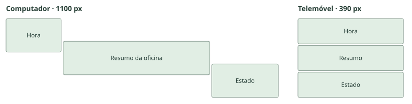

Medidas desta ficha
- Medidas a usar
- Entre sessões e entre os elementos de cada sessão: 16 px. Em fila: altura mínima de 144 px; 72 px para a hora; base de 192 px para o resumo.
- Quando muda a disposição
- Até 640 px inclusive: empilhar hora, resumo e vagas; retirar a altura mínima e as bases fixas. Acima de 640 px: usar a fila.
- Resultado esperado
- 390 px: uma coluna por sessão. 768 e 1100 px: hora no topo, resumo a meio e vagas no fundo.
Larguras para testar: 390 px, 768 px e 1100 px. São larguras da janela do navegador. Só escreves uma media query se o exercício a pedir.
No CSS: escreve 16px, sem espaço entre o número e a
unidade.
Primeiro passo: Abre style.css no editor e lê a etapa 1.
Quando fizeres uma alteração, guarda o ficheiro e atualiza esta página para veres o que
mudou.
Ver o resultado esperado no computador e no telemóvel
Este esquema mostra as posições, sem escala. Para a largura intermédia, usa os testes no fim.

Área de trabalho · Agenda de oficinas
Oficinas no café
-
4 vagas
Infusões da horta
Reconhece três ervas pelo aroma.
-
Lotação esgotada
Um desenho por chávena
Desenha à vista. O café empresta papel e lápis.
-
2 vagas
Prova de café
Compara duas torras e regista as diferenças.
Etapas e conceitos desta ficha
Já conheces: Listas ordenadas, classes e adaptação ao telemóvel com media queries.
Com apoio nesta ficha: Numa fila, align-items alinha o conjunto na vertical; align-self abre uma exceção para um filho. A direção também muda o significado da base.
- Mantém a ordem das sessões
- Centra o conteúdo de uma sessão
- Reserva espaço para o resumo
- Abre duas exceções ao alinhamento
- Passa para coluna e muda o título
Encontras as instruções de cada etapa em style.css.
Quando é que está pronto?
Usa o modo responsivo do navegador. Experimenta 390 px (telemóvel), 768 px (intermédio) e 1100 px (computador).
Assinala os testes que passaram. As marcas desaparecem quando atualizas a página; guarda o
resultado em registo.md.
Desafio opcional
Só na sessão das 15h30, a 768 px ou mais, coloca o estado no topo. As outras horas e estados devem ficar como estavam.